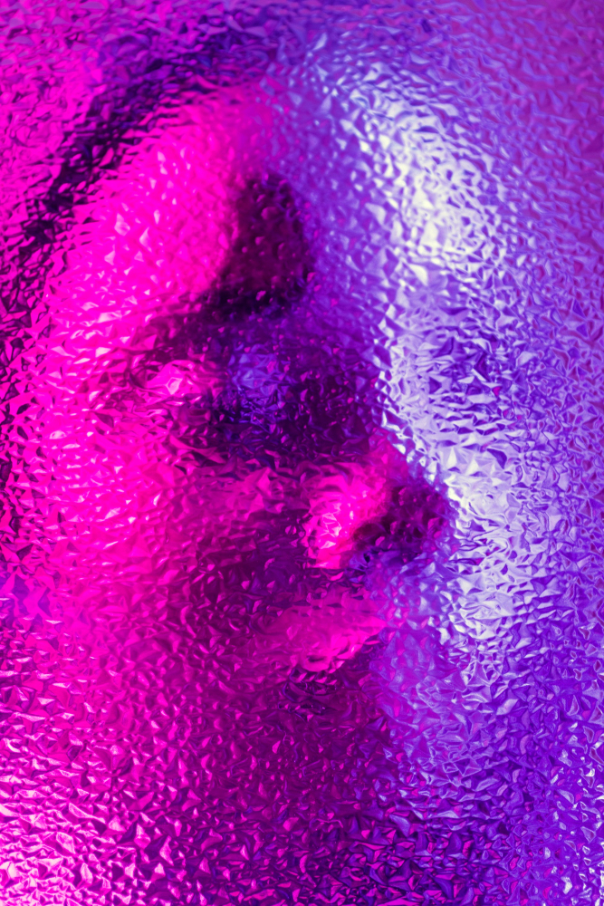

Prisms
A poem by Laura Riding JacksonWhat is beheld through glass seems glass.
The quality of what I am
Encases what I am not,
Smooths the strange world.
I perceive it slowly
In my time,
In my material,
As my pride,
As my possession:
The vision is love.
When life crashes like a cracked pane,
Still shall I love
Even the slight grass and the patient dust.
Death also sees, though darkly,
And I must trust then as now
Only another kind of prism
Through which I may not put my hands to touch.